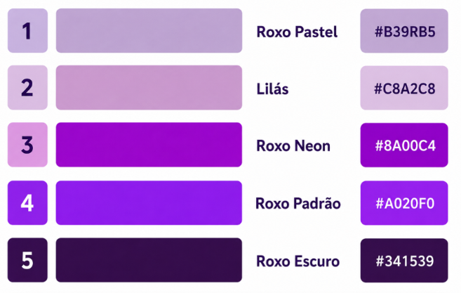

Roxo

Siginficado da Cor:
* Principais Significados e SimbolismosEspiritualidade e Misticismo:
É considerada a cor da conexão com o sagrado, da intuição, da purificação da mente e da meditação.
* Poder, Luxo e Realeza:
Na Antiguidade, o pigmento roxo era extraído de caracóis marinhos raros de forma trabalhosa e cara, sendo um artigo exclusivo de reis, imperadores e nobres.
* Transformação e Transmutação:
Simboliza a mudança profunda, a libertação de velhos hábitos e a busca por autoconhecimento.
* Criatividade e Imaginação:
Estimula a originalidade e ambientes voltados para a expressão artística e inovação.
Paleta que Utilizamos:

Roxo Padrão #A020F0
Lilás #C8A2C8
Roxo escuro#341539
Roxo Neon #8A00C4
Marcas Pesquisadas:
*NUbank
*Milca
*Twitch
*Cadbury
*Roku Express
Significado Cultural
1. BrasilLuto e religiosidade:
O roxo simboliza a tristeza, a penitência e o luto na tradição católica.
Quaresma:
A cor aparece em igrejas e vestimentas durante a Quaresma e a Semana Santa.
Espiritualidade:
Representa um momento de reflexão e respeito espiritual.
2. Estados UnidosHonra militar:
O roxo representa bravura e sacrifício em combate.
Coração Púrpura:
A famosa medalha Purple Heart é dada a soldados feridos ou mortos em serviço.
Respeito:
A cor também está ligada ao reconhecimento de atos heroicos.
3. TailândiaLuto das viúvas:
O roxo é usado especificamente por mulheres que perderam seus maridos.
Tradição:
Quando um cônjuge falece, a viúva veste roupas roxas durante o período de luto.
Respeito aos mortos:
A cor demonstra a dor da perda e a memória do falecido.